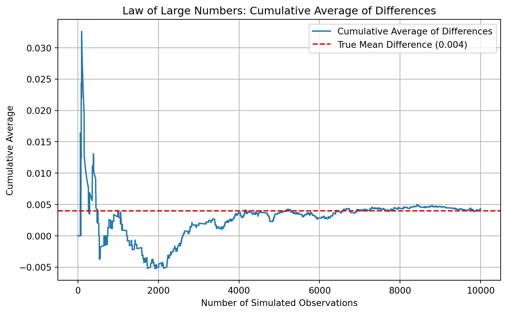

Dean Karlan at Yale and John List at the University of Chicago conducted a field experiment to test the effectiveness of different fundraising letters. They sent out 50,000 fundraising letters to potential donors, randomly assigning each letter to one of three treatments: a standard letter, a matching grant letter, or a challenge grant letter. They published the results of this experiment in the American Economic Review in 2007. The article and supporting data are available from the AEA website and from Innovations for Poverty Action as part of Harvard’s Dataverse.
To fully appreciate the importance and implications of this work, it is useful to examine the broader context in which the study was conducted, as well as the experimental methodology and key findings that emerged.
In the field of charitable fundraising, a persistent challenge faced by organizations is determining the most effective strategies to encourage donations. Historically, private giving in the United States has been robust, frequently surpassing 2% of GDP; however, fundraising practices have traditionally been guided more by anecdotal experiences and conventional wisdom rather than by rigorous empirical evidence. To address this gap, economists Dean Karlan (Yale University) and John List (University of Chicago) executed a pioneering field experiment aimed at empirically examining whether and how the “price” of giving influences charitable contributions.
Karlan and List’s research specifically focused on the “demand side” of charitable donations, an area notably under-explored relative to the tax-driven “supply side” incentives. The core research question guiding their investigation was whether reducing the effective cost of charitable donations through matching grants could successfully increase donor contributions. To empirically test this question, the researchers collaborated with a liberal nonprofit organization in the United States, utilizing a sample of 50,083 prior donors. These individuals were randomly assigned into two primary groups: approximately one-third constituted the control group, receiving a standard four-page fundraising letter, while the remaining two-thirds formed the treatment group, receiving a similar letter that prominently included an offer of a matching grant.
Within the treatment group, further randomization led to the creation of specific sub-conditions. These conditions varied by matching ratios (1:1, 2:1, or 3:1), maximum match amounts ($25,000, $50,000, $100,000, or an unspecified cap), and suggested donation amounts relative to donors’ previous contributions (100%, 125%, or 150%). The fundraising letters, distributed in August 2005, strategically referenced contemporary political events, specifically Supreme Court nominations, to ensure the real-world relevance and external validity of the study.
The results of Karlan and List’s experiment revealed compelling evidence regarding the efficacy of matching grants. The simple presence of a matching offer increased both the response rate by 22% and revenue per solicitation by 19%. Interestingly, however, increasing the match ratio beyond 1:1 to ratios of 2:1 or 3:1 yielded no additional incremental benefit. The findings suggest that the matching grants may have primarily acted as signals of credibility and urgency, leveraging social cues embedded in the framing of the match.
Additionally, the experiment found that variations in maximum match amounts and suggested donation benchmarks did not significantly influence donor behavior. Importantly, the study identified a notable contextual effect related to political environment: donors in politically conservative (“red”) states demonstrated significantly higher responsiveness to matching offers, with an increase of 55% in revenue per solicitation, whereas minimal effects were observed in politically liberal (“blue”) states. The estimated price elasticity derived from this experiment was approximately –0.225, aligning well with prior elasticity estimates from studies examining tax-based incentives.
This research provides clear implications for fundraising strategy and policy. Practitioners are advised that matching grants are effective tools, though escalating match ratios beyond a simple 1:1 offer may not be cost-effective or necessary. Moreover, the study challenges the conventional assumption that larger matching ratios inherently generate greater donor enthusiasm. Finally, the observed sensitivity to political and social context suggests that fundraisers must carefully consider these factors when crafting appeals.
Karlan and List’s seminal findings were published in their influential paper, “Does Price Matter in Charitable Giving? Evidence from a Large-Scale Natural Field Experiment,” appearing in the American Economic Review in 2007. Their supporting data are publicly accessible through the AEA Data Archive, Innovations for Poverty Action (IPA), and Harvard Dataverse, facilitating further academic scrutiny and replication studies.
Data
Description
The dataset compiled by Dean Karlan and John List for their 2007 field experiment comprises 50,083 observations, each corresponding to an individual who had previously donated to a U.S.-based nonprofit organization. The data were collected to evaluate the effectiveness of different fundraising appeals and include detailed information on treatment assignments, donor responses, demographic characteristics, and contextual political variables. Approximately two-thirds of the sample were assigned to a treatment group that received a fundraising letter featuring a matching grant offer, with match ratios randomly varied across 1:1, 2:1, and 3:1 levels. The remaining third received a standard appeal letter and served as the control group.
Additional randomization was applied within the treatment group to vary the maximum matching amount ($25,000, $50,000, $100,000, or unstated) and the suggested donation amount based on the donor’s past giving behavior. The dataset includes binary indicators of whether a donation was made in response to the solicitation, the amount contributed, and the change in donation relative to previous behavior.
Furthermore, it contains socio-demographic and contextual variables at the ZIP code level, including average household size, median household income, homeownership rate, educational attainment, and the proportion of residents in urban areas. Political context is captured through indicators of whether the respondent resided in a red or blue state or county, based on the 2004 presidential election. This rich, multi-dimensional dataset enables rigorous analysis of causal effects in charitable giving, while also allowing for the exploration of heterogeneous treatment effects across geographic, political, and demographic lines.
import pandas as pdimport statsmodels.api as smfrom scipy import statsimport matplotlib.pyplot as pltimport seaborn as snsimport numpy as npdf = pd.read_stata("karlan_list_2007.dta")df.describe
Suggested donation was highest previous contribution
askd2
Suggested donation was 1.25 x highest previous contribution
askd3
Suggested donation was 1.50 x highest previous contribution
ask1
Highest previous contribution (for suggestion)
ask2
1.25 x highest previous contribution (for suggestion)
ask3
1.50 x highest previous contribution (for suggestion)
amount
Dollars given
gave
Gave anything
amountchange
Change in amount given
hpa
Highest previous contribution
ltmedmra
Small prior donor: last gift was less than median $35
freq
Number of prior donations
years
Number of years since initial donation
year5
At least 5 years since initial donation
mrm2
Number of months since last donation
dormant
Already donated in 2005
female
Female
couple
Couple
state50one
State tag: 1 for one observation of each of 50 states; 0 otherwise
nonlit
Nonlitigation
cases
Court cases from state in 2004-5 in which organization was involved
statecnt
Percent of sample from state
stateresponse
Proportion of sample from the state who gave
stateresponset
Proportion of treated sample from the state who gave
stateresponsec
Proportion of control sample from the state who gave
stateresponsetminc
stateresponset - stateresponsec
perbush
State vote share for Bush
close25
State vote share for Bush between 47.5% and 52.5%
red0
Red state
blue0
Blue state
redcty
Red county
bluecty
Blue county
pwhite
Proportion white within zip code
pblack
Proportion black within zip code
page18_39
Proportion age 18-39 within zip code
ave_hh_sz
Average household size within zip code
median_hhincome
Median household income within zip code
powner
Proportion house owner within zip code
psch_atlstba
Proportion who finished college within zip code
pop_propurban
Proportion of population urban within zip code
Balance Test
As an ad hoc test of the randomization mechanism, I provide a series of tests that compare aspects of the treatment and control groups to assess whether they are statistically significantly different from one another.
To assess the integrity of the randomization process employed in Karlan and List’s (2007) field experiment, we conducted a series of balance tests comparing the treatment and control groups on several key pre-treatment variables. The goal of these tests is to verify that the random assignment of fundraising letters resulted in comparable groups with respect to observable characteristics prior to treatment, thereby strengthening the causal interpretation of the experimental findings.
The variables selected for the balance tests closely mirror those presented in Table 1 of the original publication and encompass both donation history and demographic attributes. Specifically, we examine (1) the donor’s highest previous contribution (hpa), (2) the number of prior donations (freq), (3) the number of years since the donor’s initial contribution to the organization (years), (4) an indicator variable for female donors (female), and (5) a binary indicator for residing in a politically conservative (“red”) state as determined by support for George W. Bush in the 2004 U.S. presidential election (red0).
When comparing our calculated group means to those reported in Karlan and List’s Table 1, we find a near-exact match across all variables. In our sample, the mean highest previous contribution is $59.60 for the treatment group and $58.96 for the control group—identical to the values in the published table. Likewise, the average number of prior donations is 8.04 in the treatment group and 8.05 in the control group, with years since initial donation averaging 6.08 and 6.14, respectively. The proportion of female donors is 27.5% in the treatment group and 28.3% in the control group, while the share of donors living in red states is 40.7% versus 39.9% across the two groups. These findings confirm that the implementation of the randomization closely aligns with the authors’ original execution.
To formally test for balance, we employed both two-sample t-tests and simple linear regressions of each covariate on the treatment assignment indicator. In all cases, the resulting p-values were above the conventional 0.05 threshold, indicating no statistically significant differences between the treatment and control groups at the 95% confidence level. The closest results to marginal significance were observed for the female variable (p = 0.080 in the t-test; p = 0.079 in the regression) and the red0 variable (p = 0.060 in the t-test; p = 0.061 in the regression). While these values approach the 10% significance level, they are insufficient to suggest meaningful imbalance and instead support the interpretation that randomization achieved statistical equivalence on observed characteristics.
These balance checks serve a vital role in reinforcing the credibility of the experimental design. As underscored by Karlan and List in their original presentation of Table 1, demonstrating that treatment and control groups are comparable across a range of relevant baseline variables helps rule out confounding factors. Consequently, we can attribute any subsequent differences in donor behavior to the experimental treatments rather than to pre-existing group disparities.
Experimental Results
Charitable Contribution Made
First, I analyze whether matched donations lead to an increased response rate of making a donation.
To evaluate the impact of matching grants on charitable giving, we analyzed the difference in donation rates between individuals who received a standard solicitation letter (control group) and those who received a letter offering a matching grant (treatment group). The results, visualized in Figure 1, show that 1.79% of individuals in the control group made a donation, compared to 2.20% in the treatment group. This initial comparison suggests a positive effect of the matching grant offer on the likelihood of donating.
To assess the statistical significance of this difference, we conducted a two-sample t-test for proportions. The t-statistic was 3.21, with a corresponding p-value of 0.0013, indicating that the increase in donation rates among the treatment group is statistically significant at the 1% level. This result suggests that the observed difference is unlikely to be due to random chance alone.
To further substantiate this finding, we estimated a bivariate linear regression with a binary dependent variable indicating whether a donation was made. The treatment group indicator had a coefficient of 0.0042, which implies a 0.42 percentage point increase in donation likelihood associated with receiving a matching offer. The p-value associated with this coefficient was 0.0019, reaffirming the statistical significance of the treatment effect. The model’s R-squared value, although small (0.00019), is typical for binary outcomes in field settings and highlights that the variation in donations is largely driven by unobserved factors, as expected.
Additionally, we replicated the probit regression reported in Table 3, Column 1 of Karlan and List (2007), where the probability of donating was modeled as a function of treatment status. Our probit estimate of the treatment coefficient was 0.087, with a p-value of 0.0019—closely matching the original study. This replication reinforces the original conclusion that offering a matching grant significantly increases the probability of donation.
Taken together, these results provide robust evidence that matching grants effectively increase charitable giving, even when evaluated using conservative statistical methods. The increase, though modest in magnitude, is statistically significant and practically meaningful, particularly in the context of large-scale fundraising efforts. These findings align with the behavioral insight that individuals are more likely to give when their contributions are perceived to have enhanced impact or when social cues, such as matching gifts, signal urgency or endorsement.
Differences between Match Rates
Next, I assess the effectiveness of different sizes of matched donations on the response rate.
Match Ratio Response Rate Regression Coefficient p-value
0 1:1 0.0207 0.0207 0.0
1 2:1 0.0226 0.0226 0.0
2 3:1 0.0227 0.0227 0.0
Comparison Difference in Response Rate t-statistic p-value \
0 1:1 vs 2:1 0.0019 -0.9650 0.3345
1 2:1 vs 3:1 0.0001 -0.0501 0.9600
Coefficient Difference Standard Error
0 0.0019 0.002
1 0.0001 0.002
To further investigate the effectiveness of different matching grant ratios, we restricted our analysis to individuals in the treatment group and examined variation in donation rates across three matching levels: 1:1, 2:1, and 3:1. The response rates were remarkably similar across groups, with 2.07% of individuals in the 1:1 match group donating, compared to 2.26% in the 2:1 group and 2.27% in the 3:1 group. Although there is a slight upward trend in donation rates as the match ratio increases, the absolute differences are marginal—only 0.19 and 0.01 percentage points between successive levels.
To assess whether these differences are statistically meaningful, we conducted a series of two-sample t-tests comparing the donation rates between match levels. The difference between the 1:1 and 2:1 groups was not statistically significant (p=0.335), nor was the difference between the 2:1 and 3:1 groups (p=0.960). These results provide no evidence that offering a higher match ratio leads to a greater likelihood of donation.
We corroborated these findings using an ordinary least squares (OLS) regression, regressing the binary donation outcome on dummy indicators for each match ratio group. The regression was specified without an intercept so that each coefficient would represent the mean response rate for its respective group. The estimated coefficients were 0.02075 for the 1:1 group, 0.02263 for the 2:1 group, and 0.02273 for the 3:1 group, all statistically significant at the 0.001 level. However, differences between these coefficients were small and statistically indistinguishable. Specifically, the difference between the 2:1 and 1:1 coefficients was 0.00188 (SE = 0.00197), and the difference between the 3:1 and 2:1 coefficients was just 0.00010 (SE = 0.00197). Neither difference is statistically significant, confirming the t-test results.
These findings align with Karlan and List’s original interpretation in their 2007 study. While the presence of a match clearly boosts giving relative to a control condition, increasing the match ratio from 1:1 to 2:1 or 3:1 does not generate additional giving. This suggests that the behavioral mechanism driving increased donations is not necessarily the financial leverage offered by higher match ratios, but rather the psychological or social signal conveyed by the presence of any match offer. The match may function more as a nudge or cue, reinforcing the importance or credibility of the appeal, rather than as a precise price incentive.
Size of Charitable Contribution
In this subsection, I analyze the effect of the size of matched donation on the size of the charitable contribution.
To evaluate the effect of matching grant offers on the amount donated, we conducted a series of ordinary least squares (OLS) regressions and visualized the distribution of donation amounts across treatment conditions. We first estimated a linear model using the full sample, which included both donors and non-donors. The regression specification modeled donation amount as a function of a binary treatment indicator. The estimated coefficient on the treatment variable was $0.154, with a p-value of 0.063. Although this estimate is not statistically significant at the conventional 5% level, it reaches marginal significance at the 10% level, suggesting that offering a matching grant may slightly increase overall donations by increasing participation, rather than the amount given by each donor.
To isolate the intensive margin, whether the treatment affected how much individuals gave once they decided to donate we ran the same regression on a restricted sample of donors only. In this case, the estimated coefficient on the treatment indicator was –$1.67, with a p-value of 0.561. This result indicates that among those who chose to donate, individuals in the treatment group gave slightly less on average than those in the control group. However, the difference is not statistically significant, and the relatively large p-value suggests that this finding is likely attributable to random variation rather than a treatment effect.
Histograms of donation amounts for both the control and treatment groups further illuminate the distributional patterns. As is typical in charitable giving data, both distributions are highly right-skewed, with most donors giving relatively small amounts and a few contributing substantially more. Visual inspection shows little difference between the two groups, with the average donation in each group marked by a red dashed line. The near overlap in mean values visually reinforces the regression results: while the presence of a matching offer may influence whether someone donates, it appears to have little effect on how much they give once they have made the decision to contribute.
Overall, this analysis complements prior findings by reinforcing the notion that matching grants primarily operate on the extensive margin—that is, increasing the likelihood of giving—rather than on the intensive margin, or the size of the gift. This distinction is important for fundraisers: while match offers can broaden donor participation, they may not significantly raise per-donor revenue among those who are already inclined to give.
Simulation Experiment
As a reminder of how the t-statistic “works,” in this section I use simulation to demonstrate the Law of Large Numbers and the Central Limit Theorem.
Suppose the true distribution of respondents who do not get a charitable donation match is Bernoulli with probability p=0.018 that a donation is made.
Further suppose that the true distribution of respondents who do get a charitable donation match of any size is Bernoulli with probability p=0.022 that a donation is made.
np.random.seed(42)p_control =0.018p_treatment =0.022n_simulations =10000sample_sizes = [50, 100, 500, 1000]sim_results = {}for n in sample_sizes: control_samples = np.random.binomial(1, p_control, size=(n_simulations, n)) treatment_samples = np.random.binomial(1, p_treatment, size=(n_simulations, n)) control_means = control_samples.mean(axis=1) treatment_means = treatment_samples.mean(axis=1) pooled_std = np.sqrt((control_means * (1- control_means) / n) + (treatment_means * (1- treatment_means) / n)) valid_indices = pooled_std >0 t_stats = np.full(n_simulations, np.nan) t_stats[valid_indices] = (treatment_means[valid_indices] - control_means[valid_indices]) / pooled_std[valid_indices] sim_results[n] = {"mean_control": np.mean(control_means),"mean_treatment": np.mean(treatment_means),"mean_t_statistic": np.nanmean(t_stats),"std_t_statistic": np.nanstd(t_stats),"t_statistics": t_stats }sim_results_df = pd.DataFrame({"Sample Size": sample_sizes,"Mean (Control)": [sim_results[n]["mean_control"] for n in sample_sizes],"Mean (Treatment)": [sim_results[n]["mean_treatment"] for n in sample_sizes],"Mean t-stat": [sim_results[n]["mean_t_statistic"] for n in sample_sizes],"SD t-stat": [sim_results[n]["std_t_statistic"] for n in sample_sizes]})sim_results_df.set_index("Sample Size").round(5)
To illustrate foundational statistical principles such as the Law of Large Numbers and the Central Limit Theorem within the context of the Karlan and List (2007) experimental design, we conducted a simulation study comparing two groups: a control group with a donation probability of 0.018, and a treatment group with a slightly higher donation probability of 0.022. These probabilities mirror the actual donation rates observed in the original field experiment. We simulated 10,000 random samples for each group across a range of increasing sample sizes—specifically n= 50, 100, 500, and 1,000 and calculated the mean donation rates as well as t-statistics for comparing group means within each simulation iteration.
The results underscore key statistical principles. As sample sizes increased, the simulated group means converged to the true underlying probabilities. For instance, at n=1,000, the average simulated donation rate for the control group was 0.01800, and for the treatment group, 0.02195—nearly identical to their theoretical values. The average t-statistic for n=1,000 was approximately 0.63, with a standard deviation near 0.99, indicating the t-statistic distribution was both centered and scaled appropriately, as expected under the Central Limit Theorem. In contrast, at smaller sample sizes (n=50 and n=100), the t-statistic distributions were unstable, with many values undefined or highly variable due to the small number of binary outcomes and low donation rates. These issues resulted in missing or non-informative summary statistics, highlighting the volatility of inference at small 𝑛.
Visualizations of the t-statistics for n=500 and n=1,000 further reinforce these patterns. The histograms reveal increasingly symmetric, bell-shaped distributions as the sample size grows, with the mean of each distribution marked by a red dashed line. At n=1,000, the distribution closely approximates a standard normal curve, a hallmark of the Central Limit Theorem. The standard deviation of the t-statistic distribution also approaches 1, which is consistent with theoretical expectations for standardized test statistics under the null hypothesis.
These results demonstrate how both the Law of Large Numbers and the Central Limit Theorem manifest in practice. As sample sizes grow, sample means become more accurate estimates of the population parameters (convergence in probability), and the sampling distribution of test statistics approaches a normal distribution, enabling valid inference using tools like the t-test. Conversely, in small samples, randomness dominates, increasing the likelihood of erratic or misleading results. This simulation thus reinforces the importance of sufficient sample size in experimental design and statistical inference—especially when working with low-probability binary outcomes, such as charitable giving.
Law of Large Numbers
np.random.seed(42)control_draws = np.random.binomial(1, 0.018, size=100000)treatment_draws = np.random.binomial(1, 0.022, size=10000)control_draws_subset = control_draws[:10000]diff_vector = treatment_draws - control_draws_subsetcumulative_avg_diff = np.cumsum(diff_vector) / np.arange(1, len(diff_vector) +1)plt.figure(figsize=(8, 5))plt.plot(cumulative_avg_diff, label='Cumulative Average of Differences')plt.axhline(y=0.022-0.018, color='red', linestyle='--', label='True Mean Difference (0.004)')plt.title('Law of Large Numbers: Cumulative Average of Differences')plt.xlabel('Number of Simulated Observations')plt.ylabel('Cumulative Average')plt.legend()plt.grid(True)plt.tight_layout()plt.show()

To visually demonstrate the Law of Large Numbers (LLN) in the context of donation behavior, we simulated binary donation outcomes from two Bernoulli distributions. Specifically, we generated 100,000 independent draws from a control group distribution with a probability of success p=0.018 and 10,000 draws from a treatment group distribution with p=0.022. We then computed the difference between each of the first 10,000 matched treatment and control observations and tracked the cumulative average of these differences across the sample. This cumulative average was plotted against the number of simulated observations, with a red dashed line indicating the true mean difference between the two groups (0.022 − 0.018 = 0.004).
The resulting graph illustrates the fundamental property of the LLN. In the early stages of the simulation, the cumulative average of differences fluctuates substantially, reflecting the volatility inherent in small samples. However, as more observations are included, the cumulative average begins to stabilize and gradually converges toward the true population difference of 0.004. This convergence visually affirms the core prediction of the LLN: as the number of independent and identically distributed trials increases, the sample average tends to approach the expected value.
This simulation effectively contextualizes the LLN using a real-world experimental design and underscores why statistical inference becomes more reliable with larger sample sizes. By showing how the empirical difference in donation behavior becomes increasingly stable and reflective of the underlying population parameters, the simulation reinforces both the theoretical importance and practical implications of the LLN in experimental economics and applied statistics.
To illustrate the Central Limit Theorem (CLT) in the context of experimental data on charitable giving, we conducted a simulation comparing average donation rates between control and treatment groups drawn from Bernoulli distributions. Specifically, we simulated 1,000 replications at each of four different sample sizes n=50, 200, 500, and 1,000— sing control group probabilities of p=0.018 and treatment group probabilities of p=0.022. In each replication, we calculated the difference in sample means (treatment minus control), resulting in distributions of 1,000 average differences for each sample size.
The histograms of these average differences provide compelling visual evidence for the CLT. At n=50, the distribution is jagged and displays high variability. The value of zero, which represents the null hypothesis of no treatment effect, appears near the center of the distribution due to this noise. At n=200, the distribution becomes more symmetric and begins to resemble a bell-shaped curve, while the sampling mean visibly approaches the true population difference of 0.004. By n=500 and 𝑛=1,000, the distributions exhibit the hallmark shape of the normal distribution: smooth, symmetric, and tightly centered around the expected mean. In these larger samples, the value of zero lies clearly in the tail of the distribution, suggesting that a t-test would likely reject the null hypothesis in favor of a statistically significant treatment effect.
These results vividly demonstrate the predictive power of the CLT. As the sample size increases, the sampling distribution of the difference in sample means converges in shape to the normal distribution, even though the underlying data are binary. This convergence underpins the validity of inferential tools such as the t-test and confidence intervals in empirical work. It also highlights why larger sample sizes enhance statistical power and reduce the risk of Type II error. In sum, this simulation confirms that even in experiments involving binary outcomes like donation behavior, standard statistical inference remains appropriate and robust when sample sizes are sufficiently large.